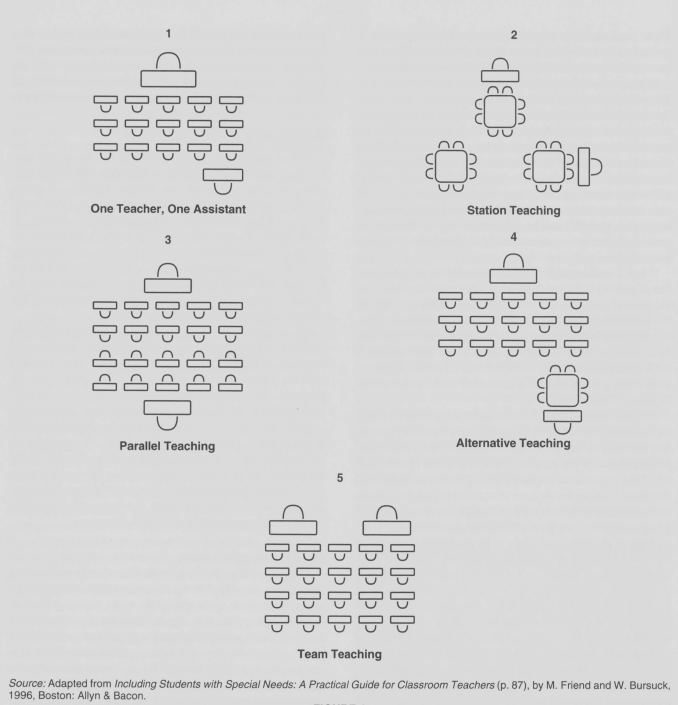

Lesson plan 2025-04-25 by Richel
Here is the current schedule:
Time |
Topic |
Teacher |
|---|---|---|
09:00-10:00 |
Packages |
Richel |
10:00-10:15 |
Break |
. |
10:15-11:00 |
Isolated environments conda/pip |
Björn+Richel (co-teaching) |
11:00-11:15 |
Break |
. |
11:15-12:00 |
Basic Slurm and interactive, ?OnDemand,?parallel session |
Birgitte |
12:00-13:00 |
Break |
. |
13:00-14:00 |
IDEs: Jupyter/vscode/Spyder [1] |
Jayant |
14:00-14:15 |
Break |
. |
14:15-15:00 |
matplotlib 1/2 |
?Rebecca, else Björn |
15:00-15:15 |
Break |
. |
15:15-15:45 |
matplotlib 2/2 |
?Rebecca, else Björn |
15:45-16:00 |
Evaluation |
. |
My sessions are:
Time |
Topic |
Teacher |
|---|---|---|
09:00-10:00 |
Packages |
Richel [Suggest: also co-teach here] |
10:00-10:15 |
Break |
. |
10:15-11:00 |
Isolated environments conda/pip |
Björn+Richel (co-teaching) |
Status ‘Packages’:
Current material can be found
[dead link]and is made by BjörnSuggest co-teaching there too?
Status ‘Isolated environment’:
Current material can be found here and is made by Björn
Is this really it? It is part of the ‘Extra’ material, I guess it can/should be moved
Meeting Björn 2025-02-19 ~13:00
Goals:
To find out how to do co-teaching
Questions:
What are our personal goals of co-teaching?
How do we define good co-teaching?
How do we think good co-teaching looks like?
How do we prepare our lessons together?
Discuss questions from [Cook & Friend, 1995]:
To what extent am I willing to let someone else carry out teaching tasks at which I am particularly skilled?
B:
R: I can when (1) we agree on the learning outcomes, and (2) there is some from of evaluation (i.e. the other can learn from his/her potential mistake)
How willing am I to allow a colleague to see aspects of my teaching in which I am not particularly skilled?
B:
R: perfectly fine
To what degree do I believe that there is more than one right way to carry out almost any teaching/learning task?
B:
R: I believe that and am interested to find out other ways
How willing am I to tell a colleague when I disagree about an issue or have a concern?
B:
R: I am willing to do so
And [Hepner & Newman, 2010]:
Are you flexible or able to compromise your beliefs? Which one(s) will you not compromise?
R: I can compromise on any beliefs based on evidence from the academic literature
What skills can you contribute to the co-teaching team that will allow you to be successful?
R: planning, openness, directness, aware of of the literature, preparedness
How often should co-teachers reflect on their practice? What are some ways reflection contributes to the co-teaching partnership?
R: For these two hours, one/more questions on an evaluation form are good enough. I’d enjoy to read a reflection from the other teacher
How can co-teachers reconcile differences in personal planning styles?
R: I can be flexible and prepare from way-ahead-of-time to last-minute: I just need to know
What is effective co-teaching?
Study |
Relevance/quality |
|---|---|
|
Low, only 12 teachers, close to anecdotal |
Study |
Number of co-teachers |
|---|---|
|
12 |
Approaches to Co-Teaching, from [Cook & Friend, 1995]:

From [Cook & Friend, 1995]:
[…] A first step for most co-teachers is to examine carefully their own readiness for the professional and personal demands of co-teaching […]:
To what extent am I willing to let someone else carry out teaching tasks at which I am particularly skilled?
How willing am I to allow a colleague to see aspects of my teaching in which I am not particularly skilled?
To what degree do I believe that there is more than one right way to carry out almost any teaching/learning task?
How willing am I to tell a colleague when I disagree about an issue or have a concern?
From [Cook & Friend, 1995], Table 1, ‘Questions for Creating a Collaborative
Working Relationship in Co-Teaching’:
Topic |
Questions |
|---|---|
Instructional beliefs |
What are our overriding philosophies about the roles of teachers and teaching, and students and learning? |
. |
How do our instructional beliefs affect our instructional practice? |
Planning |
When do we have at least 30 minutes of shared planning time? |
. |
How do we divide our responsibilities for planning and teaching? |
. |
How much joint planning time do we need? |
. |
What records can we keep to facilitate our planning? |
Parity signals |
How will we convey to students and others (for example, teachers, parents) that we are equals in the classroom? |
. |
How can we ensure a sense of parity during instruction? |
Confidentiality |
What information about our teaching do we want to share with others? |
. |
Which information should not be shared? |
. |
Which information about students can be shared with others? |
. |
Which information should not be shared? |
Noise |
What noise level are we comfortable with in the classroom? |
Classroom routines |
What are the instructional routines for the classroom? |
. |
What are the organizational routines for the classroom? |
Discipline |
What is acceptable and unacceptable student behavior? |
. |
Who is to intervene at what point in students’ behavior? |
. |
What are the rewards and consequences used in the classroom? |
Feedback |
What is the best way to give each other feedback? |
. |
How will you ensure that both positive and negative issues are raised? |
Pet Peeves |
What aspects of teaching and classroom life do each of us feel strongly about? |
. |
How can we identify our pet peeves so as to avoid them? |
From [Sharon, 2014]:
Achieving effective co-teaching relationships is a complex process’
Obtaining external dimensions is not enough for effective co-teaching partnerships
Teachers can use individual differences as strengths to overcome challenges
Compatibility can be achieved through being similar or complementary
In an effective co-teaching state, teachers are interdependent of each other
Ironic, the Magiera-Simmons quality indicator model of co-teaching
is not in the academic literature and the website it was at, has moved.
However, I can find these in [Simmons & Magiera, 2007]:
QI 8 Both Teachers Are Clearly Responsible For Group Instruction
QI 11 Accommodations For Students With Disabilities Are Observed In The Classroom
QI 14 Both Teachers Provide Substantial Instruction To All Students
QI 17 The Process of Learning Is Emphasized Along With The Content Being Learned
From [Peery, 2019], the four pillars of a good co-teaching relationship:
Respect
Communication
Flexibility
Humor
From [Conderman et al., 2008]:
In our co-teaching partnership:
We decide which co-teaching model we are going to use based on the benefits to students and co-teachers
We share ideas, information, and materials
We identify the resources and talents of the co-teachers
We teach different groups of students at the same time
We are aware of what our co-teacher(s) is doing even when we are not directly in his or her presence
We share responsibility for deciding what to teach
We agree on the curriculum standards that will be addressed in a lesson
We share responsibility for deciding how to teach
We share responsibility for deciding who teaches parts of the lesson
We are flexible and make changes, as needed, during a lesson
We identify student strengths and needs
We share responsibility for differentiating instruction
We include others when their expertise or experience is needed
We share responsibility for how student learning is assessed
We can show that students are learning when we co-teach
We agree on discipline procedures and implement them together
We provide feedback to each other on what goes on in the classroom
We improve our lessons based on what happens in the classroom
We freely communicate our concerns
We have a process for resolving disagreements which we use when faced with challenges and conflicts
We celebrate the process, outcomes, and successes of co-teaching
We have fun with each other and the students when we co-teach
We have regularly scheduled times to meet and discuss our work
We use our meeting time productively
We effectively co-teach even without common planning time
We explain co-teaching benefits to students and their families
We model collaboration and teamwork for our students
We are both viewed by our students as their teacher
We include students in the co-teaching role
We depend on one another to follow through on responsibilities
We seek and enjoy additional training to improve our co-teaching.
We are mentors to others who want to co-teach.
We use various co-teaching models.
We communicate our needs to our administrators.
We respect and appreciate the contributions of our co-teacher
From [Hepner & Newman, 2010]:
WaltherThomas (1996) found five common themes that emerged from her research into how successful co-teachers use their planning time:
1. Successful co-teachers trust their partners and rely on their partner’s strengths and contributions to facilitate the planning process. These coteaching partnerships have confidence in each other and delegate responsibilities, knowing that the work will be done.
2. Successful co-teachers use structured learning environments to help them use their strengths. They use a mix of direct instruction, guided practice, and individual work with teacher assistance in order to support the needs of all learners and ensure both co-teachers are equally involved and valued in the delivering the lesson. Having a structured learning environment to plan for also allows them to focus their planning time on specific types of activities.
3. Successful co-teachers ensure that both partners’ contributions are valued, both during planning time and during the lesson. There is parity at all levels, effectively erasing the distinction between the general education teacher and the special education teacher.
4. Successful co-teachers create routines to facilitate their planning. By using their knowledge of each other’s skills, strengths, and styles, in conjunction with planning routines and templates using their limited co-planning time well.
5. Successful co-teachers become more skilled over time. By combining the qualities listed above and through practice, they find their co-planning time becomes more productive, comfortable and creative as they work at it.
About co-teaching planning templates, from [Hepner & Newman, 2010]:
[…] many co-teachers use planning templates […]. While the format of these planning templates varies, they consistently include:
Identification of which co-teaching model(s) will be used. This ensures that co-teachers are constantly thinking about how they can use their strengths and the strengths of the various co-teaching models to best meet the needs of their students.
Identification of the accommodations and modifications students in the class are eligible for. This ensures that co-teachers can plan activities that take classroom accommodations into consideration. In addition, it ensures that any necessary classroom modifications, for instance in content expectations, are appropriately co-planned for.
Identification of the specific teacher roles. This ensures that both teacher’s strengths and skills are taken into account during planning and used in class. By ensuring that both teachers have a specified, active role in the class, coteachers communicate mutual respect and collaboration.
Reflection for co-teachers, from [Hepner & Newman, 2010]:
Do I feel we are jointly planning, both long term and short term?
Do I believe that I am an equal partner in the decisions that are made?
Do I feel we have a sense of interdependence?
Do I feel we are continually learning from each other?
Do I feel we have clearly defined roles and responsibilities?
Am I satisfied with our roles and responsibilities?
Am I learning as a result of our roles and responsibilities?
Do I feel that information and materials are freely shared?
Do I feel we communicate effectively?
Do we regularly reflect on and evaluate our practice?
Have we discussed various sound, research-based co-teaching models?
Are we using mutually designed planning tools?
Do I feel that my knowledge and skills are valued?
Do I feel I am frequently acknowledged and reinforced by my partner?
Do I feel my time is used productively when I am in the classroom?
Can I easily read the nonverbal cues of my partner?
Do both teachers move freely about the space in the co-taught classroom?
Do we both often present lessons in the class?
Are many measures used for grading students?
Is humor often used in the classroom?
Are modifications of goals for students with special needs fully incorporated into this class?
Do we use a variety of classroom management techniques to enhance the learning of all students?
Am I confident in my partner’s knowledge of the curriculum content?
Is time allotted or found for common planning?
Do students accept both teachers as equal partners in the learning process?
Is behavior management the shared responsibility of both teachers?
Are grading and other external responsibilities equally shared?
From [Hepner & Newman, 2010]:
A template by DeBoer and Fister (1995) asks the teacher to review each of the following points to determine if the team is doing all that they can to encourage students to think deeply, critically and reflectively in the relevant subject area.
1. Do we ensure that students process information by allowing students to ‘chew on’ the information that is presented so that it makes sense to them and they can see its application to life?
2. Do we model thinking processes such as problem-solving and decisionmaking by thinking aloud and how we revise our thinking when we have made an error?
3. Do we ask broad, open-ended questions more frequently than we ask factlevel or yes/no questions?
4. Do we follow up student responses by probing and asking for clarification, elaboration, evidence, and justification?
5. Do we have students ask questions of each other and themselves, and make them aware of the different levels of cognition (from fact-level to higherorder questions)?
6. Do we wait before calling on students so that they have time to fully process the question and formulate their response?
7. Do we have a clear, instructional purpose and accomplish it by planning a sequence of activities that promote active involvement with the content, as well as with peers?
8. Do we increase metacognition by making students conscious of their own thinking processes?
From [Hepner & Newman, 2010]:
As teachers work to develop a co-teaching relationship, it is important to consider the following questions:
Are you flexible or able to compromise your beliefs? Which one(s) will you not compromise?
What skills can you contribute to the co-teaching team that will allow you to be successful?
How often should co-teachers reflect on their practice? What are some ways reflection contributes to the co-teaching partnership?
How can co-teachers reconcile differences in personal planning styles?
From [Brendle et al, 2017]:
The co-teachers’ willingness to share the classroom and instructional responsibilities is key to a positive relationship
From [Brendle et al, 2017]:
The success of a co-teaching partnership is based on the co-teachers’ understanding and expertise in implementing research-based co-teaching models .
From [Chapple, 2009]:
If co-teachers were not of the same philosophical beliefs -that is, that all children can learn and that inclusion is essential for co-teaching to be successful- then the practice of co-teaching would not be effective.
From [Walther-Thomas et al., 1996], to discuss at a first meeting:
1. What are your expectations for students regarding: Participation? Daily preparation? Written assignments and/or homework completion?
2. What are your basic classroom rules? What are the consequences?
3. Typically, how are students grouped for instruction in your classroom?
4. What instructional methods do you like to use (e.g., lectures, class discussions)?
5. What practice activities do you like to use (e.g., cooperative learning groups? labs?)
6. How do you monitor and evaluate student progress?
7. Describe your typical tests and quizzes.
8. Describe other typical projects and assignments.
9. Do you differentiate instruction for students with special needs? If so, how?
10. Is any special assistance given to students with disabilities during class? On written assignments? On quizzes and tests?
11. How and when do you communicate with families?
12. What are your strengths as a teacher? What are your weaknesses? Pet peeves?
13. What do you see are our potential roles and responsibilities as co-teachers?
14. If we decide to co-teach together, what are your biggest hopes for our work as a team? What are your biggest concerns?
2025-04-15
The time is getting to close to do proper co-teaching. I have a meeting with BC today. This will be my meeting schedule:
Agree that there is not enough time. Suggest to continue co-teaching next iteration
[AGREED]
Double-check schedule together: I think it is good now
[AGREED] on new schedule
Split up Day 2 (RB is fine with either):
BC both hours
RB both hours
BC first hour, RB second
[AGREED] RB first hour, BC second
Suggest to collaborate with issues, because in the material we’ve put todo’s to someone’s name
[AGREED] We’ll use issues, until we feel the reply takes too long
2025-04-16
All my course material is in, only need to test these by making videos.
2025-04-25
Course material is just now done (at 7:35 in the morning).
I am worried about the tarball exercise: I estimate this to take some time, time that I don’t have.
References
[Brendle et al, 2017]Brendle, Joanna, Robert Lock, and Kate Piazza. “A study of co-teaching identifying effective implementation strategies.” International Journal of Special Education 32.3 (2017): 538-550.[Chapple, 2009]Chapple, James William. Co-teaching: From obstacles to opportunities. Ashland University, 2009.[Conderman et al., 2008]Conderman, Greg, et al. Purposeful co-teaching: Real cases and effective strategies. Corwin Press, 2008.[Cook & Friend, 1995]Cook, Lynne, and Marilyn Friend. “Co-teaching: Guidelines for creating effective practices.” Focus on exceptional children 28 (1995).[Hepner & Newman, 2010]Hepner, Stephanie, and Sarah Newman. “Teaching is teamwork: Preparing for, planning, and implementing effective co-teaching practice.” International Schools Journal 29.2 (2010).[Peery, 2019]Peery, Angela. The Co-Teacher′ s Playbook: What It Takes to Make Co-Teaching Work for Everyone. Corwin Press, 2019.[Sharon, 2014]Pratt, Sharon. “Achieving symbiosis: Working through challenges found in co-teaching to achieve effective co-teaching relationships.” Teaching and teacher education 41 (2014): 1-12.[Simmons & Magiera, 2007]Simmons, Rhea J., and Kathleen Magiera. “Evaluation of Co-Teaching in Three High Schools within One School District: How Do You Know when You Are TRULY Co-Teaching?.” Teaching Exceptional Children Plus 3.3 (2007): n3.[Walther-Thomas et al., 1996]Walther-Thomas, Chriss, Mimi Bryant, and Sue Land. “Planning for effective co-teaching the key to successful inclusion: The key to successful inclusion.” Remedial and special education 17.4 (1996): 255-264.